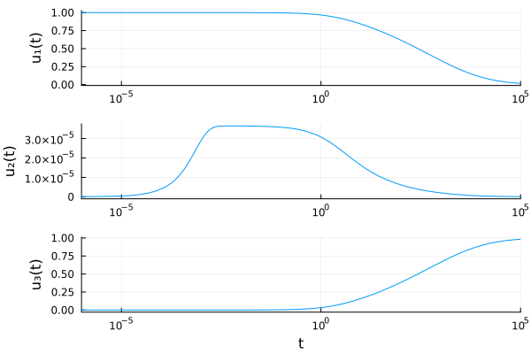
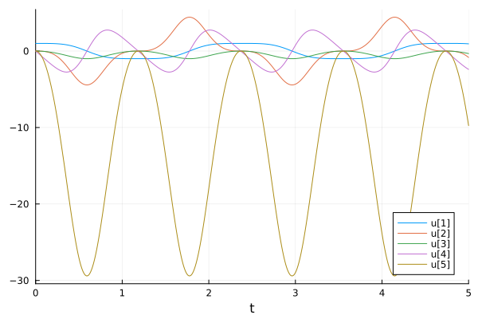

Solving DAEs with Probabilistic Numerics
ProbNumDiffEq.jl provides probabilistic numerical solvers for differential algebraic equations (DAEs). Currently, we recommend using the semi-implicit EK1 algorithm.
For a more general tutorial on DAEs check out the DifferentialEquations.jl DAE tutorial.
Solving mass-matrix DAEs with the EK1
First, define the DAE (here the ROBER problem) as an ODE problem with singular mass matrix:
using ProbNumDiffEq, Plots, LinearAlgebra, OrdinaryDiffEq, ModelingToolkit, LinearAlgebrafunction rober(du, u, p, t) y₁, y₂, y₃ = u k₁, k₂, k₃ = p du[1] = -k₁ * y₁ + k₃ * y₂ * y₃ du[2] = k₁ * y₁ - k₃ * y₂ * y₃ - k₂ * y₂^2 du[3] = y₁ + y₂ + y₃ - 1 nothingendM = [1 0 0 0 1 0 0 0 0]f = ODEFunction(rober, mass_matrix=M)prob_mm = ODEProblem(f, [1.0, 0.0, 0.0], (0.0, 1e5), (0.04, 3e7, 1e4))ODEProblem with uType Vector{Float64} and tType Float64. In-place: true
Non-trivial mass matrix: true
timespan: (0.0, 100000.0)
u0: 3-element Vector{Float64}:
1.0
0.0
0.0We can solve this problem directly with the EK1:
sol = solve(prob_mm, EK1(), reltol=1e-8, abstol=1e-8)plot( sol, xscale=:log10, tspan=(1e-6, 1e5), layout=(3, 1), legend=false, ylabel=["u₁(t)" "u₂(t)" "u₃(t)"], xlabel=["" "" "t"], denseplot=false,)
Looks good!
Solving an Index-3 DAE directly
The following is based on the "Automatic Index Reduction of DAEs" tutorial by ModelingToolkit.jl, which demonstrates how the classic Rodas4 solver fails to solve a DAE due to the fact that it is of index 3; which is why ModelingToolkit's automatic index reduction is so useful.
It turns out that our probabilistic numerical solvers can directly solve the index-3 DAE!
First, define the pendulum problem as in the tutorial:
function pendulum!(du, u, p, t) x, dx, y, dy, T = u g, L = p du[1] = dx du[2] = T * x du[3] = dy du[4] = T * y - g du[5] = x^2 + y^2 - L^2endpendulum_fun! = ODEFunction(pendulum!, mass_matrix=Diagonal([1, 1, 1, 1, 0]))u0 = [1.0, 0, 0, 0, 0];p = [9.8, 1];tspan = (0, 5.0);pendulum_prob = ODEProblem(pendulum_fun!, u0, tspan, p)ODEProblem with uType Vector{Float64} and tType Float64. In-place: true
Non-trivial mass matrix: true
timespan: (0.0, 5.0)
u0: 5-element Vector{Float64}:
1.0
0.0
0.0
0.0
0.0We can try to solve it directly with one of the classic mass-matrix DAE solvers from OrdinaryDiffEq.jl:
solve(pendulum_prob, Rodas4())It does not work! This is because of the index of the DAE; see for example this explanation from the tutorial.
Does this also hold for the EK1 solver? Let's find out:
sol = solve(pendulum_prob, EK1())retcode: Success
Interpolation: ODE Filter Posterior
t: 628-element Vector{Float64}:
0.0
1.0e-6
3.059507904487559e-5
0.00010493045200655489
0.00023059678317840222
0.0005115254907802978
0.001174695488853979
0.002472014211685773
0.003847189110423351
0.005261036269923151
⋮
4.8860938412408075
4.903015542872225
4.9201926458885525
4.937176812781508
4.9533017657824026
4.968093636087895
4.9813030184801415
4.991513376814651
5.0
u: 628-element Vector{Vector{Float64}}:
[1.0, 0.0, 0.0, 0.0, 0.0]
[1.0, -5.2308130585533385e-17, -4.899999999907276e-12, -9.800000000000003e-6, -1.6582320481886105e-10]
[1.0, 3.130076738774791e-13, -4.586688442130413e-9, -0.0002998317746398122, -5.274706127325144e-9]
[0.9999999999999986, -1.176561507997085e-11, -5.395095858827314e-8, -0.0010283184296635938, -2.552887155754018e-8]
[0.999999999999966, 9.628773540754261e-12, -2.605568944138678e-7, -0.002259848475149494, -1.3316815292660363e-7]
[0.9999999999991781, -2.3666085790293584e-10, -1.2821258050029984e-6, -0.005012949809642317, -1.1915396716110673e-6]
[0.9999999999771407, -3.9759870157265575e-9, -6.761556511038273e-6, -0.011512015790765483, -1.408432519913163e-5]
[0.9999999995517028, -8.252607158537248e-8, -2.994318586126428e-5, -0.024225739272706853, -0.00013185108160705585]
[0.9999999973701178, -4.7513881193590214e-7, -7.25242337797701e-5, -0.03770245325955011, -0.0004986230246436839]
[0.9999999908029766, -1.6802435454882445e-6, -0.00013562466146289226, -0.05155815529384356, -0.001277534657979986]
⋮
[0.9942784971060505, -0.15463627434449878, -0.10681886736898767, -1.439729947155903, -3.1423115204402965]
[0.9911791918963078, -0.21366529658056793, -0.132528524610926, -1.5984329088439264, -3.898643001598524]
[0.9868983926306097, -0.28699915617042226, -0.16134299823964937, -1.7558560494680122, -4.747847824627745]
[0.9813061792366329, -0.37393420558983703, -0.19245306885298982, -1.9066532560754186, -5.667448592997699]
[0.9745168272903938, -0.4706723855981654, -0.22431441421515033, -2.0440429250445167, -6.613343117899546]
[0.9668235007670429, -0.5722334066785147, -0.2554453488481511, -2.163885924182552, -7.5427715181845585]
[0.9586148644419042, -0.673700503836371, -0.2847060913957998, -2.2648575165031066, -8.422197289765423]
[0.9513172430671363, -0.7592699927992926, -0.30821343191282335, -2.3383471097406017, -9.133631475570569]
[0.9445695265864986, -0.8351995725825164, -0.3283114888219509, -2.3960182452822183, -9.745815972816644]Nope! The EK1 is able to solve the index-3 DAE directly. Pretty cool!
plot(sol)
Is index-reduction still worth it?
The point of the "Automatic Index Reduction of DAEs" tutorial is to demonstrate ModelingToolkit's utility for automatic index reduction, which enables the classic implicit Runge-Kutta solvers such as Rodas5 to solve this DAE. Let's see if that still helps in this context here.
First, modelingtoolkitize the problem:
traced_sys = modelingtoolkitize(pendulum_prob)Model ##MTKizedODE#168:
Equations (5):
5 standard: see equations(##MTKizedODE#168)
Unknowns (5): see unknowns(##MTKizedODE#168)
x₁(t)
x₂(t)
x₃(t)
x₄(t)
⋮
Parameters (2): see parameters(##MTKizedODE#168)
α₁
α₂(how cool is this latex output ?!?)
Next, lower the DAE index and simplify it with ModelingToolkit's dae_index_lowering and structural_simplify:
simplified_sys = structural_simplify(dae_index_lowering(traced_sys))Model ##MTKizedODE#168:
Equations (5):
5 standard: see equations(##MTKizedODE#168)
Unknowns (5): see unknowns(##MTKizedODE#168)
x₄(t)
x₂(t)
x₁(t)
x₃(t)
⋮
Parameters (2): see parameters(##MTKizedODE#168)
α₁
α₂Let's build two different ODE problems, and check how well we can solve each:
prob_index3 = ODEProblem(complete(traced_sys), Pair[], tspan)
prob_index1 = ODEProblem(simplified_sys, Pair[], tspan)
sol3 = solve(prob_index3, EK1(), abstol=1e-7)
sol1 = solve(prob_index1, EK1(), abstol=1e-7)
truesol = solve(prob_index1, Rodas4(), abstol=1e-10, reltol=1e-10)
sol1_final_error = norm(sol1.u[end] - truesol.u[end])
sol1_f_evals = sol1.stats.nf
perm = [findfirst(x -> x === s, unknowns(traced_sys)) for s in unknowns(simplified_sys)]
sol3_final_error = norm(sol3.u[end][perm] - truesol.u[end])
sol3_f_evals = sol3.stats.nf
@info "Results" sol1_final_error sol1_f_evals sol3_final_error sol3_f_evalsThe error for the index-1 DAE solve is quite a bit lower. Thus it seems that, even if the index-3 DAE could also be solved directly, index lowering might still be beneficial when solving DAEs with the EK1!
References
- [1]
- N. Bosch, F. Tronarp and P. Hennig. Pick-and-Mix Information Operators for Probabilistic ODE Solvers. In: Proceedings of The 25th International Conference on Artificial Intelligence and Statistics, Vol. 151 of Proceedings of Machine Learning Research, edited by G. Camps-Valls, F. J. Ruiz and I. Valera (PMLR, 28–30 Mar 2022); pp. 10015–10027.